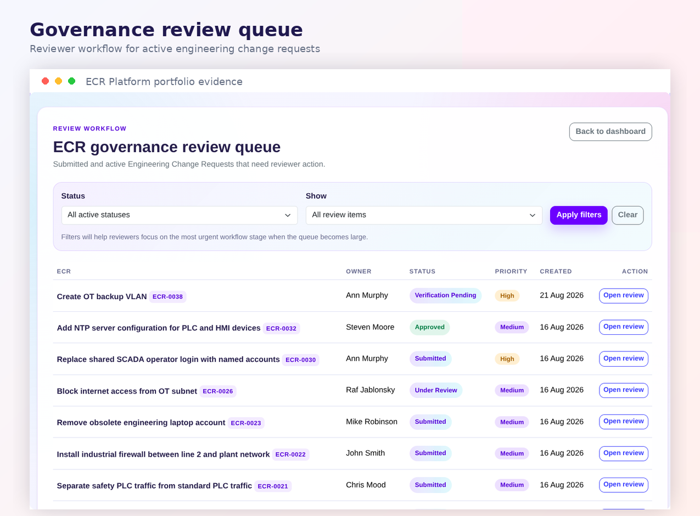
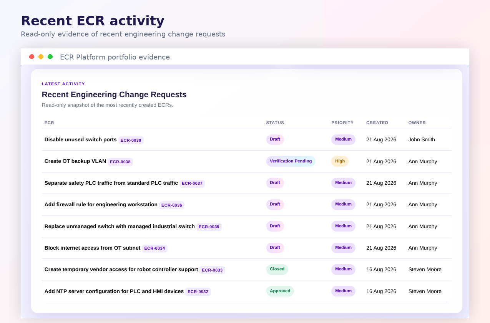
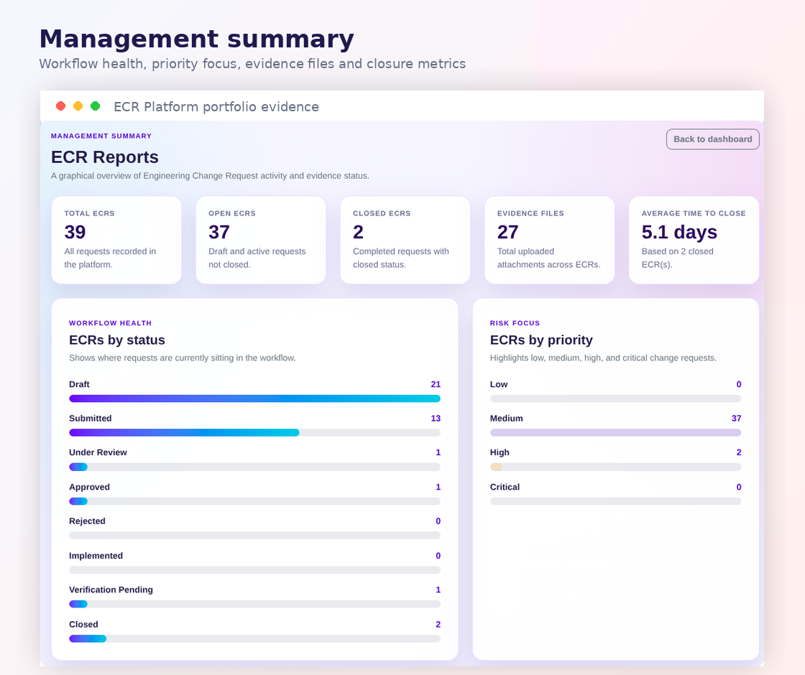

Case study
No uncontrolled change. No missing evidence.
The Engineering Change Request platform is a portfolio project that demonstrates how manufacturing change-control discipline can be translated into a digital governance workflow for OT and technical environments.
It is designed for situations where a technical change should not be handled informally through email, memory, or disconnected notes. The system creates a controlled path from request to assessment, approval, implementation, verification, and closure.
The engineering problem
Engineering changes often start with a good idea, but can become difficult to control when the evidence, ownership, approval, and close-out records are spread across emails, folders, or informal conversations.
The ECR platform gives each change a structured record so a technical team can answer the important questions:
Current MVP features
Authenticated workspace
User login, dashboard, personal ECR list, and clear separation between public explanation and signed-in work area.
Role-based access
User, manager, admin, and super user roles, including a protected super-user account and role management screen.
Review governance
Review queue for submitted ECRs, with priority, owner, status, and clear action buttons for review decisions.
Evidence and reporting
File attachments, evidence counts, status summaries, priority summaries, recent activity, and average time to close.
Product screenshots
These screenshots show the project as a working MVP, not just a concept. They provide evidence for the portfolio and can later be expanded with diagrams and technical notes.



Controlled ECR workflow
The platform is designed around a controlled path from request to closure. This is important because technical changes in industrial environments need traceability and accountability.
Request created but not yet submitted.
Ready for review decision.
Reviewer assessment in progress.
Controlled decision before implementation.
Approved technical work completed.
Evidence and close-out confirmation required.
Final status after verification and records.
OT and Network Security relevance
This project is highly relevant to an OT Network Engineer and Network Security Engineer pathway because technical risk is often introduced through poorly controlled change.
- Firewall changes: requests can record reason, approval, affected systems, evidence, and verification.
- PLC and HMI access: engineering access can be reviewed and documented before implementation.
- Network segmentation: VLAN, routing, and firewall-rule changes can follow a formal workflow.
- Audit trail: status movement and reviewer accountability support investigation and learning.
- Management reporting: managers can see change volume, workflow health, and open risk.
For the portfolio, the project shows more than coding. It demonstrates practical governance thinking, secure workflow design, role-based access, and an understanding of how engineering change affects operational environments.
Roadmap and next improvements
Risk assessment
Add structured risk fields for safety, cybersecurity, production impact, affected assets, and rollback readiness.
Asset inventory link
Connect ECRs to OT assets such as PLCs, HMIs, switches, firewalls, historians, and engineering workstations.
Collector data
Explore safe data collection or manual import to support evidence-led engineering decisions.
Public demo strategy
Maintain a safe demo environment with disposable data for hiring managers and portfolio visitors.
Project on GitHub
Explore the Engineering Change Request Platform repository.
Review the source code, project structure, documentation, and future development work for this engineering governance platform.
Repository
Source code and application structure for the ECR workflow, dashboards, reviews, and reports.
Documentation
Project notes can explain the governance model, user roles, workflow states, and OT security value.
Development
Future improvements can be tracked through issues, commits, releases, and roadmap updates.